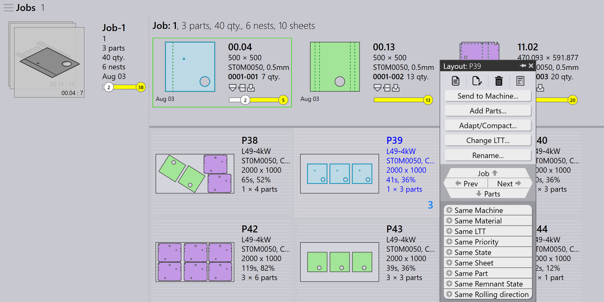

Layout 面板
本節說明與 layout 相關的動作，例如 Send to machine、 Recall from machine、 Export outputs、 Mark complete、Add parts…、 Adapt/Compact…、 Split layout，以及用於管理 layout 實例的其他選項。

|
|
Send to machine
-
當 nest 準備就緒（已填滿或急需）時，您可以將其送到 機床。
-
在 nest 上按一下滑鼠右鍵，然後選取 Send to machine…。
-
系統會自動建立一個以 nest 命名的資料夾。
-
輸出檔案（fxlyt、NC、report、csv）會匯出到 JOB 輸出位置。
-
已送到機床的 nest 會以藍色勾選標記顯示。
| 一旦釋放，這些 nest 就不會再重試重新排料。 |
Recall from machine
-
如果輸出需要驗證或更新（例如新增更多零件）：
-
在匯出的 layout 上按一下滑鼠右鍵。
-
選取 Recall from machine…。
-
-
輸出檔案和資料夾（fxlyt、NC、report、csv）會被刪除。
-
nest 再次變為可編輯。
-
您可以進行變更並再次將其送到機床。
Export outputs
-
在任何已送到機床的 layout（nest）上按一下滑鼠右鍵，然後按一下 Export outputs。
-
Export Outputs 選項會將 NC、Report 和 Layout 檔案匯出到 各自的機床輸出資料夾。
-
此選項會使用 layout 的目前單位設定重新產生 NC 檔案。
| Export Outputs 不適用於已完成的 Layout 以及 等待重新排料佇列中的 Layout。 |
標記完成
-
nest 在機床上處理完成後，在 nest 上按一下滑鼠右鍵，然後 選取 Mark complete…。
-
您可以選取多個 nest，並同時將它們標記為完成。
-
當 nest 標記為完成時：
-
它會變為灰色、移到清單末尾，並以綠色勾選 標記顯示。
-
layout 會從作用中的 layout 清單中移除。
-
零件和 job 狀態會更新，已處理的數量會移至 完成狀態。
-
該 layout 的輸出檔案會從機床輸出 位置移除，以避免重複使用。
-
Add parts…

-
使用此選項可將更多零件新增到排料相對不佳的 layout。與 互動式 Nesting 一樣，這是一個精靈導向的選項，可同時用於 單一或多個 layout。
-
使用此選項時，TruSmartCAM 會在主要工作區域裝載 Layout 重新排料精靈。 按住 Ctrl 鍵並選取一個或多個 要排料到 layout 上的零件，然後按 Next。

-
所選零件會在下一個步驟中顯示，並帶有可編輯的 數量欄。如有需要，在 Update Qty 欄位中更新零件 數量。按一下 Next 繼續進行 nesting。請注意， 數量只能增加，不能減少。
-
所有 layout 會分別 nest，nested 結果會顯示 新排料的零件放置在其上。選取 layout 會顯示所有 現有的 layout 零件。如果重新排料期間沒有放置新零件，結果會自動捨棄。具有多個複本的 layout 在重新排料後可能會產生不同的圖案。
Adapt/Compact…
-
當原始機床停機或需要平衡機床工作負載時，此精靈式命令可用於將 layout 從一台機床 調整到另一台機床。

-
當計畫使用的板材缺貨且 layout 需要在另一個可用板材上重新 規劃時，可以使用它。
-
您可以將排料在較小板材上的 layout 合併到較大板材上，以更有效率地使用 材料。
-
如果沒有大板材庫存，您可以將排料在較大板材上的 layout 分割到較小板材上。
-
您可以透過將多個 layout（甚至來自 不同機床）合併在一起，來提升它們的排料效率。
-
若要使用它，選取一個或多個 layout，然後按一下 Adapt/Compact… 以在工作區域中開啟精靈。

-
左窗格顯示所有選取的 layout，Parts 窗格顯示 layout 零件。
-
選取目標機床和板材材料，然後按一下 next 執行重新 nesting。
-
新的 nest 結果會顯示在結果窗格中。
-
按一下 next 以儲存調整或壓縮後的 layout。

分割 layout
Split layouts… 選項可讓您透過修改數量， 將現有的 layout 分割為多個 layout， 而無需重做 tooling 或 nesting。
此功能在以下情況特別 有用：
-
當您需要立即生產部分總數量，同時 排程剩餘數量以供稍後生產時。
-
當生產需求需要分配到多個班次或 天數以最佳化工作流程和資源利用率時。
-
當特定機床暫時無法使用或被佔用，且您需要 調整 layout 以配合目前的生產限制時。
若要分割 layout，請執行以下步驟：
-
在 Layouts 檢視中，選取所需的 layout。

-
按一下 Split layouts…。
-
在 New Copies 中輸入所需的值。

-
按一下 OK。

所選 layout 現在已分割為兩個具有調整數量的 layout。